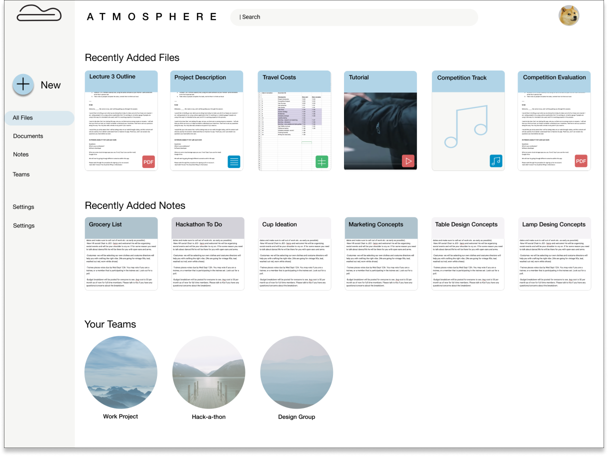
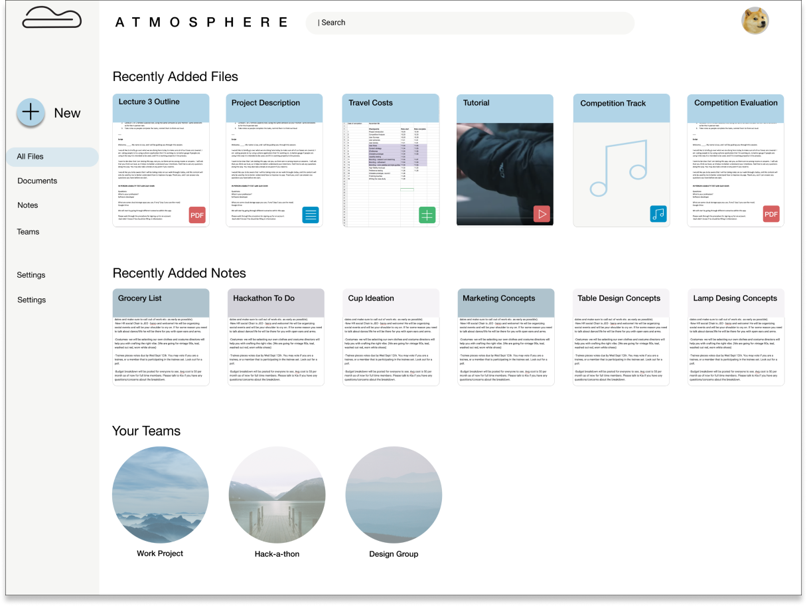

Atmosphere aims to fill the gaps existing in current cloud storage services on the market. We cater to those that actively create and document, while also giving them an environment to communicate and project manage, making it a reliable and clutter-free workspace. Welcome to a cleaner atmosphere.

Design Roles
- UI Design
- UX Design
- Branding and Identity
Design Deliverables
- User Surveys
- Competitive Analysis
- User Stories
- User Flows
- Content Strategy
- User Personas
- Wireframes
- Prototypes
- Usability Testing
- High Fidelity Mock Ups
Specifications
Tools:
- Sketch
- Invision
- Figma
- Usability Hub
Timeline:
- Nov 2018 - Dec 2018
Overview
Problem
I was brought on to create a fresh and new example of cloud storage that would be competitive to the existing platforms. This would mean providing necessary features, but also adding features that would carve out space in the market for the new proposed platform.
Solution
I proposed to create a cloud storage platform catering to students and professionals that create, take a lot of notes, and collaborate. Atmosphere is a platform that organizes your work in three distinct workspaces: a space for all of your various documents and uploads, a space to take and organize your notes, and a space to organize teams and team documents, with the ability to collaborate in real time. The idea is to offer a simple one stop shop with no frills, focusing on making the UI a peaceful and clutter free space that can help you focus on what really matters. I’m working off of the principle of a clear space producing a clear mind.
User Research + Competitive Analysis
Comparing the results of user testing and competitive analysis, I was able to see if the user research confirms the findings discovered through analysis. I found that several things were confirmed, which were the lack of proper project management components in the current platforms was an opportunity to capitalize on, as well as the lack of proper note-taking space.
Key user survey results

100% share files with other people
43% dislike the UI/UX of their current platforms

Note-taking trends:
66% use a notebook
46.7% usenative phone note-taking app
Users project manage mostly via:
66.7% use email
46.7 use cloud storage app and chat app (like Slack)
Competitive Analysis
Mindbody
- -No solid note-taking integration
- -No project management
Eventbrite
- Mainly cloud-storage - no solid note-taking or project management
Meetup
- -Solely for note-taking
- -No other content creation present
Opportunity
What does this mean for me as a designer? I have my two target features that I want to integrate at this time: Project management and robust note taking. This, while keeping in mind a clean and clutter free workspace to optimize efficiency. I can now move forward to confirm that this direction is solid.
User Personas
I developed three personas based off of the two main demographics I found out of surveying, which were students and working professionals (primarily in tech fields).

Charles Brandon
Videographer, dancer, director of a competitive dance team, dance teacher
Gender: Male
Location: Queens, NY
Age: 26
“This small but intense community can really use some organization.”
Frustrations
A big frustration for Charles is having to use apps like Instagram and Facebook, which he’d like to avoid, in order to find classes to take. He also gets frustrated when he misses a class as it was only posted on social media. Another frustration is having to look through studio websites to discover new classes, with little information about the classes on the websites. It ends up being hard for him to keep track of what’s going on, and to build some sort of training schedule.
Goals
- Avoid using any mainstream social media apps.
- Occasionally teaches classes and workshops, and would like to promote easily.
- Could use this app as a way to get the word out about classes within a studio he is building.
Key features determined from user stories
Searching for classes using criteria specific to dance
Saving classes to a calendar
Ability for teachers and organizers to post their events
Ability to build a profile with a bio and preferences
Sharing documents with collaborators and others
User Flows
Wireframing
I found the visualization of my findings up to this point was particularly challenging, as there are some robust and well-designed tools already existing on the market. That in mind, I started brainstorming what I could do to differentiate this product from others , while providing solid and easy to use features.
Wireframe Sketches


Wireframes in Figma


Branding
Another fantastic component of the design process: the stages of branding. Below I have an example of my mind map, a place I love to start to get all my thoughts out on paper so I can determine what ideas I will be using as inspiration for the visuals.
Mind Map and Logo Sketches


Moodboard and Logo Refinement


High Fidelity Mockups
Exploration
I have my wireframes.
I have my design system.
Her I began to merge the two, still playing around with layout and colors while I determined how the wireframes and branding fit together.


Revisions
After iterating a few times, I started to determine what worked and what didn’t. I received feedback from users I was testing, friends, and colleagues.
I learned that my push for a very minimal design was sometimes too minimal for users, so I had to “scale it back.”
I learned that some colors work better than others, and how the layout can direct someone’s attention to the right place.
 
